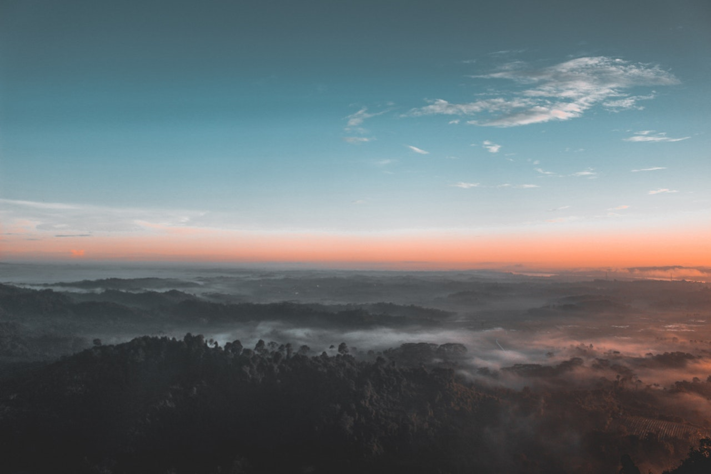

Locally captained. Built for BC water.
Outdoor Adventures BC is a Kelowna-based charter company with one promise: give you the best day you can have on an interior BC lake.
Venture out in British Columbia
We run guided fishing charters and private sightseeing tours out of Kelowna, BC — on Okanagan Lake and up through Shuswap, Kalamalka, Mabel, Upper and Lower Arrow and Kinbasket. Every trip is captained and private, so you get real local knowledge, not a boat full of strangers.
Our boat — a 26-foot Kingfisher 2525 Weekender — is set up to be equally comfortable for a family sunset cruise and a full-day kokanee troll. Heated cabin, full head, refrigerator, and enough downrigger gear to put you on fish from first light to sundown.
The Okanagan is our backyard. We fish it year-round, we know the productive structure, and we know which lake is firing that week. If you're visiting Kelowna and want a day on the water that actually catches fish, we'd love to take you out.

How we run a charter
Private, always
Your group on your charter — no shared boats, no rushed turnarounds. Your time on the water is yours.
Local knowledge
We pick the lake based on conditions and target species for the week — not a fixed itinerary written in March.
Responsible angling
Barbless hooks, careful handling, conservation-minded limits. We want these lakes to fish this well in twenty years.
Ready to get out on the water?
Kelowna-based · 7 days a week · $200/hr